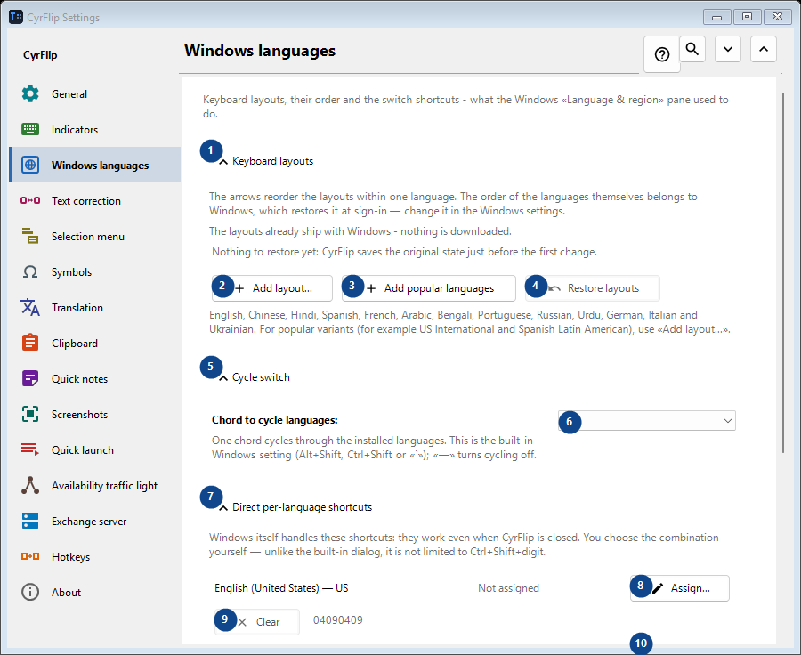
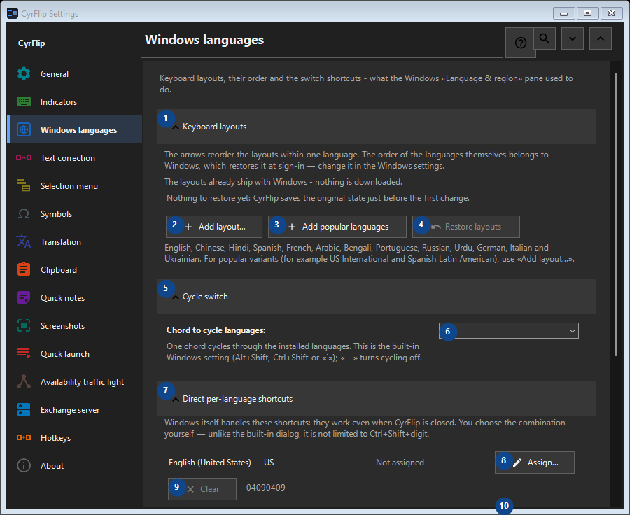

Windows languages
What this is for
Keyboard layouts, their order and the switch shortcuts - what the Windows «Language & region» pane used to do.


In this order
Settings apply immediately. There is no required order; use the groups below.
The elements
1. Keyboard layouts
Use this command when you need the action named above. Review any confirmation before accepting it.
Your shortcuts2. Add layout...
Use this command when you need the action named above. Review any confirmation before accepting it.
Your shortcuts3. Add popular languages
Use this command when you need the action named above. Review any confirmation before accepting it.
Your shortcuts4. Restore layouts
Nothing to restore yet: CyrFlip saves the original state just before the first change. This control is currently unavailable. Enable its feature or select an entry first.
Your shortcuts5. Cycle switch
Use this command when you need the action named above. Review any confirmation before accepting it.
Your shortcuts6. Chord to cycle languages
Choose or enter the value for the adjacent label. Review it before continuing.
Your shortcuts7. Direct per-language shortcuts
Use this command when you need the action named above. Review any confirmation before accepting it.
Your shortcuts8. Assign... - English (United States) - US
Use this command when you need the action named above. Review any confirmation before accepting it.
Your shortcuts9. Clear - English (United States) - US
Use this command when you need the action named above. Review any confirmation before accepting it. This control is currently unavailable. Enable its feature or select an entry first.
Your shortcuts10. Assign... - русский (Россия) - Russian
Use this command when you need the action named above. Review any confirmation before accepting it.
Your shortcuts11. Clear - русский (Россия) - Russian
Use this command when you need the action named above. Review any confirmation before accepting it. This control is currently unavailable. Enable its feature or select an entry first.
Your shortcuts12. Restore shortcuts
Nothing to restore yet: CyrFlip saves the original state just before the first change. This control is currently unavailable. Enable its feature or select an entry first.
Your shortcuts13. Windows settings
Use this command when you need the action named above. Review any confirmation before accepting it.
Your shortcuts14. Open Windows settings
Opens the Windows settings, where a display language (the translation of Windows itself) is installed.
Your shortcuts